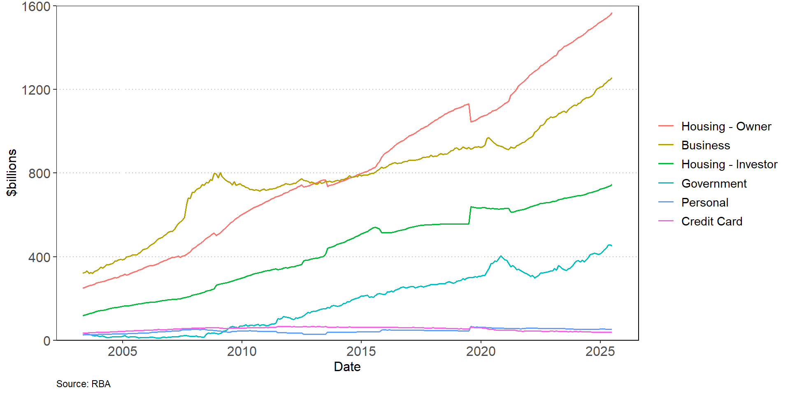
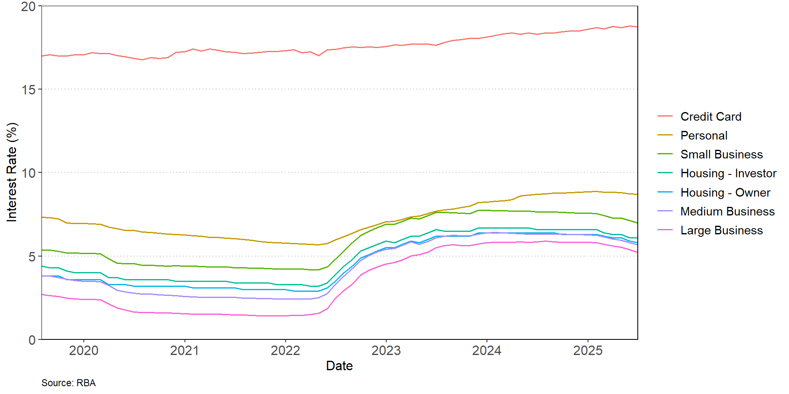

Credit Risk
FIN 331 Lecture 4
Andrew Ainsworth
University of Wollongong
Lecture outline
- What is credit risk?
- What factors influence the chance of default?
- How should the interest rate on a loan be calculated?
- How do measure the credit risk of a loan?
- Why does diversification matter when considering the risk of a portfolio of loans?
What is credit risk?
- Credit risk reflects the chance that that promised cash flows on a financial asset will not be fully paid
- The principal that is loaned and the expected interest payments are at risk if a borrower defaults
- The financial assets held by banks provide
- A fixed upside payoff of principal and interest payments that is expected to occur with high probability
- Downside risk if a borrower defaults that is expected to occur with a much smaller probability
- If a borrower defaults, the bank will no longer receive any interest payments and it could lose some or all of the principal if the bank cannot lay claim to some of the borrower’s assets through legal bankruptcy and insolvency proceedings
- Banks need to screen and monitor borrowers to ensure that they lend to those with the highest probability of making interest payments and repaying the principal borrowed
Types of loans in Australia
- Business loans
- Maturity can vary greatly
- Principal can vary greatly
- Interest rate can be fixed or floating
- Loan can be secured against collateral or unsecured
- The lender has a claim on the collateral if the borrower defaults
- Loans can be syndicated where they are provided by a group of banks rather than a single lender
- Loans can be a spot loan
- The borrower uses the entire loan amount immediately
- Loans can be a line of credit
- The lender provides a maximum amount and the borrower has the option to take down any amount up to the maximum at any time over the commitment period
- Loan terms can include covenants
- Covenants restrict, or encourage, various actions to enhance the probability of repayment
- Covenants can include limits on the type and amount of new debt, investments, and asset sales the borrower may undertake while the loan or bonds are outstanding
- Financial covenants are also often imposed restricting changes in the borrower’s financial ratios such as its leverage ratio or current ratio
Types of loans in Australia
- Real estate
- Residential and investment
- Interest rate can be fixed or floating
- Majority are floating rate in Australia
- Generally for a 30-year term
- These loans are secured against property
- The loan size is limited as a proportion of valuation of the property
- Personal loans
- Car loans
- Car acts as collateral
- Interest rate type, maturity and principal all vary
- Credit card
- Credit card is a revolving loan with no collateral
- Interest rate is generally high
Bank lending in Australia

Interest rates by loan type

Analyzing credit risk
- Banks needs to measure the probability of borrower default
- The ability to do this depends largely on the amount of information the bank has about the borrower
- Information on retail borrowers is collected internally or purchased from external credit agencies
- Information on business borrowers can be sourced from publicly available information, such as certified accounting statements, stock and bond prices, and equity analysts’ reports, in addition to internal information
- The Five Cs of Credit can be used to analyse credit risk
- Character: Probability that the loan applicant will try to honour the loan obligations
- Capacity: Subjective judgment regarding the applicant’s ability to pay according to the terms of the loan
- Collateral: Assets that the loan applicant offers as security backing the loan
- Conditions: General economic trends or special developments in certain geographic regions or sectors of the economy that might affect the applicant’s ability to meet the loan obligations
- Capital: General financial condition of the applicant as indicated by an analysis of the applicant’s financial statements and his or her leverage
Analyzing credit risk
- Borrower-specific factors
- Loan to valuation ratio (LVR)
- Cash-flow (ability to service the loan)
- Assets
- Age
- Occupation
- Leverage (debt/equity)
- Collateral (secured vs unsecured)
- Volatility of earnings
- Reputation
- Financial ratios (e.g. liquidity ratios, debt and solvency ratios, profitability ratios)
- Market-specific factors
- The stage of the business cycle
- The level of interest rates
Calculating the return on a loan
- The promised return a bank receives on a loan is driven by a number of factors
- Interest rate
- Fees
- Credit risk premium
- Collateral backing
- The contractually promised gross return on the loan
\[(1+k) = [1 + of +(BR + \varphi)]\]
- where
- \(BR\) is the base lending rate and reflects the bank’s weighted-average cost of capital or its marginal cost of funds
- \(\varphi\) is the credit risk premium charged on the loan
- \(of\) is a loan origination fee paid by the borrower
Calculating the return on a loan
- The expected return \([E(R)]\) on a loan needs to take into account the probability that the borrower will not repay the loan
- \(p\) is the probability that the loan is repaid in full
- \((1-p)\) is the chance that the lender will receive no repayment (i.e. default)
\[
\begin{align}
1+E(r) &=p(1+k)+(1-p)0 \\[3 px]
E(r) &= p(1+k) - 1
\end{align}
\]
- If \(p<1\) then default risk is present
- The bank must set the risk premium \((\varphi)\) sufficiently high to compensate for this risk
- Setting high-risk premiums \((\varphi)\) can reduce the probability of repayment \((p)\)
- \(k\) and \(p\) are not independent
- Banks can control for credit risk through the interest rate charged on the loan or the size of the loan
Calculating the return on a loan
- Retail borrowers
- If granted credit, they are generally charged the same rate of interest irrespective of credit risk
- Credit rationing is more likely where the amount of credit extended is limited
- Wholesale borrowers
- Interest rate charged on a loan will incorporate credit risk
- Different interest rates are charged across borrowers
- Credit rationing also applied
- Higher interest rates reflect a higher credit risk premium and compensate the lender for the higher probability of default
- Low risk borrowers will not borrow at high interest rates
- Only riskier borrowers will be willing to borrow at high interest rates
- High contractual interest rates can reduce the expected return on a loan because they incentivise the borrower to invest in risky projects
- Increasing interest rates \((k)\) may decrease the probability \((p)\) that a borrower will pay the promised return
Calculating the return on a loan
Estimating default risk
- Credit scoring models use observed borrower characteristics to calculate a score that is designed to measure the borrower’s default risk
- These models can help
- Identify the factors that predict default risk
- Evaluate the relative importance of these factors
- Improve the pricing of default risk
- Screen out bad loan applicants
- Credit scoring models include these three broad types
- Linear probability models
- Logit models
- Linear discriminant analysis
Estimating default risk
- Linear probability models (and logit models) use regression techniques (linear or logit) to identify which variables \((X)\) help to explain whether a borrower did, or did not, default
- where \(PD_i\) takes a value of 1 for defaults and zero for non-defaults for borrower \(i\)
- \(\beta_j\) represents the sensitivity of default to variable \(j\)
- \(X_{ij}\) is the observations on the \(j\) for each of the \(i\) borrowers
\[PD_i =\sum_{j=1}^n \beta_j X_{ij} + \varepsilon_i\]
- Banks can use the estimated coefficients \((\beta_j)\) and the value of the variables \((X_{ij})\) for a prospective borrower to determine their credit risk
- This value can be interpreted as the expected probability of default for the borrower: \(E(PD_i) = (1-p_i)\)
- The logit model is preferred to the linear probability model as it ensures the default probabilities lie between 0 and 1
Estimating default risk
- Linear discriminant models use past data to explain repayment experience on old loans
- Altman’ Z-score model examines publicly traded manufacturing firms in the United States to estimate a measure of default risk
\[Z = 1.2 X_1 + 1.4 X_2 + 3.3 X_3 + 0.6 X_4 + 1.0 X_5 \]
- \(X_1\): working capital / total assets ratio
- \(X_2\): retained earnings / total assets ratio
- \(X_3\): earnings before interest and taxes / total assets ratio
- \(X_4\): market value of equity / book value of total liabilities
- \(X_5\): sales / total assets ratio
- A Z-score of less than 1.81 is a high default risk firm
- A Z-score greater than 2.99 is a low default risk firm
Problems with these models
- These models usually discriminate only between two extreme cases of borrower behaviour: no default and default
- There are different degrees of default from non-payment or delay of interest payments (non-performing assets) to outright default on all promised interest and principal payments
- The weights in the discriminant function are not expected to remain constant
- Discrimination analysis models are sensitive to the weights for the different variables
- These models will differ across industries
- The factors are also assumed to be independent
- These models ignore important, hard-to-quantify factors that may play a crucial role in the default or no default decision
- Reputation of the borrower
- Macroeconomic factors
Market-based measure of credit risk
- Examine difference in yields of corporate bonds and government bonds to infer probability of default
- Corporate bonds have different credit ratings issued by ratings agencies (e.g. Moody’s, Standard and Poor’s)
- Consider a one-year government bond yielding \(i\) and a corporate bond yielding \(k\) and a probability of default of \((1-p)\)
- An investor is indifferent between these two bonds if
\[p(1+k) = 1+i\]
- We can infer the probability of default as
\[(1-p) = 1 - \frac{1+i}{1+k}\]
Market-based measure of credit risk
- We can also consider the the recovery rate \((\gamma)\) if the loan defaults
\[[(1-p)\gamma(1+k)] + [p(1+k)] = 1+i\]
- If the loan has collateral backing \((\gamma >0)\) then the required risk premium on the loan is lower
- Collateral requirements are a method of controlling default risk
- The risk premium \((\varphi)\) is the difference between \(k\) and \(i\)
\[k-i = \varphi = \frac{(1+i)}{(\gamma + p - p \gamma)} - (1+i)\]
- \(\gamma\) and \(p\) are perfect substitutes
- Collateral effectively reduces the loss given default
Loan portfolio diversification
- Banks need to consider the risk of their loan portfolio, in addition to the risk of individual loans
- Systematic, rather than idiosyncratic, risk factors cause material loan losses for banks
- Banks can impose concentration limits
- Set maximum lending to individual borrowers, sector or geographical area
- Banks can track credit ratings of certain pools of loans using a loan migration matrix
- A loan migration matrix (or transition matrix) seeks to reflect the historic experience of a pool of loans in terms of their credit rating migration over time
- Credit rating agencies, such as Standard and Poor’s and Moody’s provide credit ratings on bonds and companies
- These ratings capture the creditworthiness of the bond issuer ranging from AAA to D (default)
- If the credit ratings of a number of firms in a sector or rating class decline faster than has been historically experienced, banks can reduce their lending to that sector
Loan portfolio diversification
- The transition probabilities reflect the average proportions of loans experiencing upgrades or downgrades for that rating
| Credit Rating at Start of Year |
Credit Rating at End of Year
|
| AAA - A |
BBB - B |
CCC - C |
D |
| AAA - A |
0.88 |
0.09 |
0.02 |
0.01 |
| BBB - B |
0.08 |
0.83 |
0.06 |
0.03 |
| CCC - C |
0.02 |
0.14 |
0.78 |
0.06 |
Loan portfolio diversification
- Expected return on an n-security portfolio
\[
\begin{align}
E(R_p) &= w_1 E(R_1) + w_2 E(R_2) + ... + w_n E(R_n) \\[3px]
&= \sum_{i=1}^{n}{w_i E(R_i)}
\end{align}
\]
- Variance of portfolio returns:
\[
\begin{align}
\sigma_p^2 &= \sum_{i=1}^{n} \sum_{j=1}^{n} w_i w_j \sigma_{ij} \\
&= \sum_{i=1}^{n} \sum_{j=1}^{n} w_i w_j \rho_{ij} \sigma_i \sigma_j
\end{align}
\]
- Banks can diversify some of their credit risk if correlations between default risk adjusted returns is less than 1
Moody’s Analytics RiskFrontier Model
- Moody’s has developed a proprietary model to estimate the risk and return of infrequently traded loans to input into portfolio theory
- The model uses the default probability on each loan in a portfolio to identify the overall risk of the portfolio
- The expected loss on a loan \(E(L_i)\) is driven by changes in the borrower’s credit quality (expected default frequency \((EDF)\)) and the amount of the loan not recovered (loss given default \((LGD)\))
- Return on the loan \((R_i)\)
\[R_i = AIS_i - E(L_i) = AIS_i - (EDF_i \times LGD_i)\]
- \(AIS_i\) is the all-in-spread is the risk premium earned on the loan
- Risk of the loan \((\sigma_i)\) based on binomial distribution
\[\sigma_i = \sqrt{EDF_i(1-EDF_i)} \times LGD_i \]
Moody’s Analytics RiskFrontier Model
- Correlation \((\rho_{ij})\) between two loans is based on
- Firm specific factors (idiosyncratic)
- Systematic factors
- Global economic risk
- Regional risk (Europe, North America, Japan, Southeast Asia and Australia/New Zealand)
- Industrial sector risk (financials, mining, consumer nondurables, consumer durables, technology, medical services, and other)
- According to Moody’s default correlations tend to be low and lie between 0.002 and 0.15
- The model can be used to measure portfolio risk, understand the source of risk exposures, manage risk concentrations, pricing of new loans and stress-testing
APRA standards on credit risk
- APRA Prudential Standard: APS 220 Credit Risk Management
- The credit risk management framework must, at a minimum, include:
- A credit risk appetite statement;
- A credit risk management strategy;
- Policies and processes supporting clearly defined and documented roles, responsibilities and formal reporting structures for the management of credit risk;
- A designated credit risk management function;
- A management information system that is adequate, both under normal circumstances and in periods of stress, for measuring, assessing and reporting on credit risk; and
- An independent review process to ensure that the credit risk management framework is effective in identifying, measuring, evaluating, monitoring, reporting, and controlling or mitigating credit risk.
- An ADI’s credit risk management strategy must describe the ADI’s willingness to accept credit risk based on exposure type, economic or industry sector, geographical location, currency and maturity
Conclusion
- Credit risk is an extremely important risk factors for banks to assess and monitor
- There are a number of factors that influence the probability of default
- The interest rate charged on loan should reflect the probability of default and the recovery rate
- There are a number of models that can be used to measure credit risk
- Diversification in lending portfolios is vital to diversify away borrower-specific credit risk
- Next week: Liquidity Risk